공조냉동기계기능사 (2001-04-29 기출문제)
1과목: 공조냉동안전관리
1. 열 용량에 대한 설명으로 맞는 것은?
- 어떤 물질 1㎏의 온도를 1℃ 올리는데 필요한 열량을 뜻한다.
- 어떤 물질의 온도를 1℃ 올리는데 필요한 열량을 뜻한다.
- 물 1㎏의 온도를 1℃ 올리는데 필요한 열량을 뜻한다.
- 물 1 1b의 온도를 1℉ 올리는데 필요한 열량을 뜻한다.
(정답률: 55%)

2. 보일러의 안전밸브 설치에 관한 설명으로 적당하지 못한 것은?
- 안전밸브는 2개 이상 설치한다.
- 한 개는 최고 사용압력 이하에서 작동하게 한다.
- 과열기용은 보일러용 나중에 작용하게 한다.
- 과열기용은 설계온도 이상이 되지 않게 한다.
(정답률: 64%)
3. 다음 전기 감전사고의 예방조치로서 적합하지 못한 것은?
- 전기설비의 점검철저
- 전기기기에 위험표시
- 충전부와 수도관, 가스관 등과 이격
- 설비의 필요 부분에는 보호접지
(정답률: 78%)
4. 다음 중 용량제어의 목적이 아닌 것은?
- 부하변동에 대응한 용량제어로 경제적인 운전을 한다.
- 경부하 가동으로 기동이 용이하게 기동시 전력을 크게 한다.
- 고내 온도를 일정하게 유지 할 수 있다.
- 압축기를 보호하여 수명을 연장한다.
(정답률: 56%)
5. 병원 건물의 공기조화시 가장 중요시 해야할 사항은?
- 공기의 청정도
- 공기 소음
- 기류속도
- 온도, 압력조건
(정답률: 80%)
6. 가스보일러의 점화시 주의사항 중 연소실 내의 용적 몇 배 이상의 공기로 충분한 사전 환기를 행해야 되는가?
- 2
- 4
- 6
- 8
(정답률: 49%)
7. 공기조화 설비의 4대 구성요소 중 옳지 않은 것은?
- 공기 조화기
- 열원장치
- 자동제어장치
- 공기 가열기
(정답률: 35%)
8. 보호구를 선정하여 효과적으로 사용하기 위한 것 중 틀린 것은?
- 작업에 적절한 보호구를 설정한다.
- 작업장에는 필요한 수량의 보호구를 비치한다.
- 보호구는 방호 성능이 없어도 품질이 양호해야 한다.
- 작업자에게 올바른 사용 방법을 빠짐없이 가르 친다.
(정답률: 80%)
9. 냉방시 공조기의 송풍량 계산과 관계있는 것은?
- 송풍기와 덕트로 부터 취득열량
- 외기부하
- 펌프 및 배관부하
- 재열부하
(정답률: 53%)
10. 2단 압축을 채용하는 목적이 아닌 것은?
- 냉동 능력을 증대시키기 위해
- 압축비가 2 이상일 때 채택
- 압축비를 감소시키기 위해
- 체적 효율을 증가 시키기 위해
(정답률: 34%)
11. 다음 중 제빙용 냉동 장치의 증발기로서 적합한 것은?
- 탱크형 냉각기
- 암모니아 만액식 쉘 앤 튜브 냉각기
- 건식 냉각기
- 관 코일식 냉각기
(정답률: 31%)
12. 공정점이 -55℃이고 저온용 브라인으로서 일반적으로 가장 많이 사용되고 있는 것은?
- 염화칼슘
- 염화나트륨
- 염화마그네슘
- 프로필렌글리콜
(정답률: 61%)
13. 응축압력이 지나치게 내려가는 것을 방지하기 위한 방법 중 틀린 것은?
- 송풍기를 on-off 시켜 풍량을 조절한다.
- 송풍기 출구에 댐퍼를 설치하여 풍량을 조절한다.
- 수냉식일 경우 물의 공급을 증가시킨다.
- 수냉식일 경우 물의 공급을 감소시킨다.
(정답률: 47%)
14. 냉동용 압축기의 안전헤드(safety head)는?
- 액체 흡입으로 압축기가 파손되는 것을 막기 위한 것이다.
- 워터자켓를 설치한 실린더 헤드(cylinder head)를 말한다.
- 토출가스의 고압을 막아주므로 안전밸브를 따로 둘 필요가 없다.
- 흡입압력의 저하를 방지한다.
(정답률: 50%)
15. 냉동기의 냉동능력이 24,000㎉/h, 압축일 5㎉/㎏, 응축열량이 35㎉/㎏일 경우 냉매 순환량은?
- 600㎏/h
- 800㎏/h
- 700㎏/h
- 4,000㎏/h
(정답률: 56%)
2과목: 냉동기계
16. 입형 암모니아 압축기의 설명 중 옳지 않는 것은?
- 탑 클리어런스가 1mm 정도이고 체적 효율이 좋다.
- 실린더를 일반적으로 물로 가열시켜 주기 위한 워터자켓을 설치한다.
- 피스톤이 길어지게 되면 더블 드링크 타이프를 채용한다.
- 회전수는 일반적으로 250∼400rpm이다.
(정답률: 36%)
17. 산소용기는 고압가스법에 어떤 색으로 표시하도록 되어있는가? (단, 일반용)
- 녹색
- 갈색
- 청색
- 황색
(정답률: 75%)
18. 다음 중 냉매의 물리적 조건이 아닌 것은?
- 상온에서 임계온도가 낮을 것(상온이하)
- 응고 온도가 낮을 것
- 증발 잠열이 크고, 액체 비열이 작을 것
- 누설 발견이 쉽고, 전열 작용이 양호할 것
(정답률: 43%)
19. 암모니아 누설검지방법이 아닌 것은?
- 유황초 사용
- 리트머스 시험지 사용
- 네슬러 시약 사용
- 헤라이드 토치 사용
(정답률: 55%)
20. 추락이나 붕괴에 의한 재해방지를 위해 착용해야 할 보호구와 가장 거리가 먼 것은?
- 안전대
- 보안경
- 안전모
- 안전화
(정답률: 73%)
21. 압축기의 압축비가 커지면 어떤 현상이 일어나겠는가?
- 압축비가 커지면 체적효율이 증가한다.
- 압축비가 커지면 체적효율이 저하한다.
- 압축비가 커지면 소요동력이 작아진다.
- 압축비와 체적효율은 아무런 관계가 없다.
(정답률: 46%)
22. 방열기의 입구온도 75℃, 출구온도 65℃, 실내(방)의 온도 20℃, 온수 순환량이 20ℓ/h일때 방열기의 방열량은 몇 Kcal/h인가?
- 200
- 400
- 1400
- 2800
(정답률: 28%)
23. 만액식 냉각기에 있어서 냉매측의 열전달률을 좋게 하는 것이 아닌 것은?
- 관이 액 냉매에 접촉하거나 잠겨 있을 것
- 관 간격이 적을 것
- 유가 존재하지 않을 것
- 관경이 클 것
(정답률: 56%)
24. 1분간에 25℃ 의 순수한 물 40ℓ 를 5℃ 로 냉각하기 위한 냉각기의 냉동능력은 몇 냉동톤 인가?
- 0.24[RT]
- 14.45[RT]
- 241[RT]
- 14458[RT]
(정답률: 52%)
25. 다음 중 저속덕트 방식의 풍속은?
- 35 ∼ 43 ㎧
- 26 ∼ 30 ㎧
- 16 ∼ 23 ㎧
- 8 ∼ 12 ㎧
(정답률: 42%)
26. 냉동기의 이론 냉동사이클로 맞는 것은?
- 오토사이클
- 카르노사이클
- 사바테사이클
- 역카르노사이클
(정답률: 72%)
27. 다음 드릴 작업 중 유의사항이 아닌 것은?
- 작은 공작물 이라도 바이스나 크랩을 사용한다.
- 드릴이나 소켓을 척에서 해체시킬 때에는 해머를 사용한다.
- 가공 중 드릴절삭 부분에 이상음이 들리면 드릴을 바꾼다.
- 드릴의 착탈은 회전이 멈춘 후에 한다.
(정답률: 75%)
28. 다음 방열기 도면 기호 중 상단 "25"는 무엇을 뜻하는 것인가?
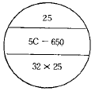
- 섹션수
- 높이
- 형식
- 유입관과 유출관의 관지름
(정답률: 57%)
29. 오는 엘보우를 나사이음으로 표시한 것은?
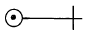
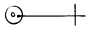
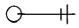
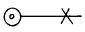
(정답률: 52%)
30. 덕트 내를 흐르는 풍량을 조절 또는 폐쇄하기 위해 쓰이는 댐퍼로써 특히 분기되는 곳에 설치하는 풍량 조절 댐퍼는?
- 루버댐퍼
- 볼륨댐퍼
- 스플릿댐퍼
- 방화댐퍼
(정답률: 52%)
31. 1초 동안에 75㎏·m 의 일을 할 경우 시간당 발생하는 열량은?
- 623 ㎉/hr
- 632 ㎉/hr
- 643 ㎉/hr
- 685 ㎉/hr
(정답률: 47%)
32. 유로를 급속히 여닫이 할 때 쓰이는 밸브는?
- 글로우브 밸브
- 콕
- 슬루우스 밸브
- 체크 밸브
(정답률: 47%)
33. 다음 중 프로세스 제어에 속하는 것은?
- 전압
- 전류
- 유량
- 속도
(정답률: 69%)
34. 장시간 재실자에 대한 쾌감조건 중 가장 영향이 큰 것은?
- 실내건구온도
- 실내습구온도
- 상대습도
- 유효온도
(정답률: 27%)
35. 동관 굽힘가공에 대한 설명으로 옳지 않은 것은?
- 굽힘부의 진원도가 다른 관에 비해 우수하다.
- 가열굽힘시 가열온도는 300 - 400℃로 한다.
- 가공성이 다른 관에 비해 좋다.
- 연질관은 핸드벤더를 사용하여 가공한다.
(정답률: 49%)
36. 압축기 분해시, 다음 부품 중 제일 나중에 분해되는 것은?
- 실린더 커버
- 쎄프디 헤드 스프링
- 피스톤
- 토출 밸브
(정답률: 40%)
37. 냉동 장치 내의 불응축 가스가 체류하는 원인 중 틀린 것은?
- 냉동능력이 감소한다.
- 냉매 윤활유 등의 열분해에 의한 가스가 발생한다.
- 장치를 분해, 조립하였을 때의 공기가 잔류한다.
- 냉동 장치의 압력이 대기압 이하로 운전될 경우 저압부로부터 공기가 침입한다.
(정답률: 20%)
38. 보일러의 역화(back fire)의 원인이 아닌 것은?
- 점화시 착화를 빨리한 경우
- 점화시에 공기보다 연료를 먼저 노내에 공급하였을 경우
- 노내의 미연소가스가 충만해 있을 때 점화하였을 경우
- 연료 밸브를 급개하여 과다한 양을 노내에 공급하였을 경우
(정답률: 49%)
39. 우리나라 사람의 체감으로 약간 덥다고 느끼는 불쾌지수는?
- 65 이상
- 75 이상
- 80 이상
- 85 이상
(정답률: 52%)
40. 다음 보기와 같은 도시기호는 무엇을 나타내는가?
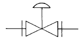
- 슬로우스 밸브
- 글로우브 밸브
- 다이어프램 밸브
- 감압밸브
(정답률: 34%)
41. 산소병 운반 취급상 가장 위험한 것은?
- 기름 묻은 손으로 운반한다.
- 산소병을 뉘어서 운반한다.
- 캡을 씌어서 운반한다.
- 손의 보호를 위해 장갑을 낀다.
(정답률: 72%)
42. 보일러의 열 출력이 150000Kcal/h, 연료소비율이 20㎏/h이며 연료의 저위 발열량이 10000Kcal/㎏ 이라면 보일러의 효율은 얼마인가?
- 0.65
- 0.70
- 0.75
- 0.80
(정답률: 58%)
43. 냉매의 특성에 관한 다음 사항 중 옳은 것은?
- R - 12 는 암모니아에 비하여 유분리가 용이 하다.
- R - 12 는 암모니아 보다 냉동력(㎉/㎏)이 크다.
- R - 22 는 R-12에 비하여 저온용에 부적당하다.
- R - 22는 암모니아 가스 보다 무거우므로 가스의 유동 저항이 크다.
(정답률: 33%)
44. 다음의 도표는 2단압축 냉동사이클을 모리엘 선도로서 표시한 것이다. 맞는 것은 어느 것인가?
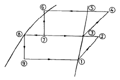
- 중간냉각기의 냉동효과 : ③ - ⑦
- 증발기의 냉동효과 : ② - ⑨
- 팽창변 통과직후의 냉매위치 : ⑦ - ⑨
- 응축기의 방출열량 : ⑧ - ②
(정답률: 44%)
45. 다음 냉동장치의 안전장치 중 전기적인 접점을 차단하는 것은?
- 안전변
- 파열판
- 유압보호 스위치
- 가용전
(정답률: 42%)
3과목: 공기조화
46. 냉동장치의 계통도에서 팽창 밸브에 대하여 옳은 것은?
- 압축 증대장치로 압력을 높이고 냉각시킨다.
- 액봉이 쉽게 일어나고 있는 곳이다.
- 고온도의 액이 저온도의 증발기로 흘러들어 가서 냉각시키려는 교축작용이다.
- 플래쉬 가스가 발생하지 않는 곳이며 일명 냉각 장치라 부른다.
(정답률: 60%)
47. 다음 중 L(코일)만의 회로의 전압, 전류 벡터는?
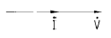
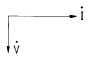
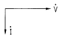
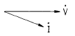
(정답률: 52%)
48. 습공기 선도에 없는 선은?
- 건구온도
- 엔탈피
- 수증기 포화압력
- 상대습도
(정답률: 25%)
49. 사고발생이 많이 일어나는 것부터 순서가 맞는 것은?
- 불안전한 상태→불안전한 행위→불가항력
- 불안전한 행위→ 불안전한 상태→ 불가항력
- 불안전한 상태→ 불가항력→ 불안전한 행위
- 불안전한 행위→ 불가항력→ 불안전한 상태
(정답률: 49%)
50. 개별 공조방식의 특징이 아닌 것은?
- 국소적인 운전이 자유롭다.
- 성에너지가 된다.
- 외기 냉방을 할 수 있다.
- 취급이 간단하다.
(정답률: 52%)
51. 다음 중 팬코일 유닛 방식의 특징이 아닌 것은?
- 외기 송풍량을 크게 할 수 없다.
- 각실에 수배관을 해야한다.
- 유닛별로 단독운전이 불가능하므로 개별 제어도 곤란하다.
- 부분적인 팬코일 유닛만의 운전으로 에너지 소비가 적은 운전이 가능하다.
(정답률: 60%)
52. 다음 중 증발기에 대한 제상방식의 종류에 속하지 않는 것은?
- 전열제상
- 핫가스제상
- 온수살포제상
- 피복제 제거제상
(정답률: 56%)
53. 가정용 백열전등의 점등 스위치는 어떤 스위치인가?
- 복귀형 스위치
- 검출 스위치
- 리미트 스위치
- 유지형 스위치
(정답률: 57%)
54. 다음 중 공구별 역할을 바르게 나타낸 것은?
- 펀치 : 목재나 금속을 자르거나 다듬는다.
- 니퍼 : 금속편을 물려서 잡고 구부리고 당긴다.
- 스패너 : 볼트나 너트를 조이고 푸는데 사용한다.
- 소켓렌치 : 금속이나 가스켓류 등에 구멍을 뚫는다.
(정답률: 75%)
55. 팽창밸브 선정시 고려할 사항 중 관계 없는 것은?
- 응축기, 증발기 종류
- 냉동능력
- 사용냉매 종류
- 고저압의 압력차
(정답률: 43%)
56. 냉방부하의 취득열량에는 현열부하와 잠열부하가 있다. 잠열부하를 포함하는 것은?
- 덕트로부터의 취득열량
- 인체로부터의 취득열량
- 벽체의 전도에 의해 침입하는 열량
- 일사에 의한 취득열량
(정답률: 36%)
57. 다음 중 절수변을 사용하여야 하는 경우는?
- 냉각수 펌프로서 왕복동 펌프를 사용할 때
- 수압이 낮을 때
- 부하변동에 대응하여 냉각수량을 제어할 때
- 일반적인 대형 에어 컨디셔너에 사용할 때
(정답률: 52%)
58. 수-공기방식인 팬코일유닛(Fan Coil Unit)방식의 장점으로 옳지 않은 것은?
- 개별제어가 가능하다.
- 증설이 비교적 간단하다.
- 전공기방식에 비해 반송동력이나 열의 반송을 위한 공간이 작아도 된다.
- 팬코일유닛의 송풍기 압력이 높기 때문에 성능이 좋은 필터를 사용할 수 있다.
(정답률: 27%)
59. 다음은 동관에 관한 설명이다. 틀린 것은?
- 전기 및 열전도율이 좋다.
- 가볍고 가공이 용이하며 동파되지 않는다.
- 산성에는 내식성이 강하고 알칼리성에는 심하게 침식된다.
- 전연성이 풍부하고 마찰저항이 적다.
(정답률: 70%)
60. 압력 자동 급수 밸브에 대한 설명 중 옳은 것은?
- 냉각수량을 감소시켜 토출가스의 온도 상승을 방지한다.
- 압축기 흡입압력의 증감에 따라 밸브 출구의 압력에 의해 작동된다.
- 응축압력을 항상 일정하게 유지시킨다.
- 증발기의 과열도를 일정하게 해준다.
(정답률: 21%)